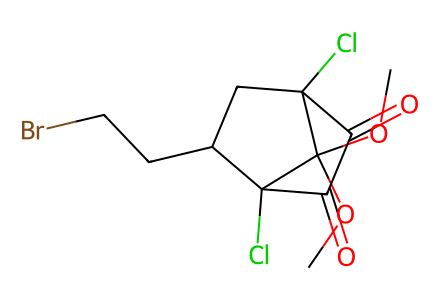
COC1(OC)C2(Cl)CC(CCBr)C1(Cl)C(=O)C2=O27 molecular records; 21 preparation events; 11 selected paths. All forward transformations in Schemes 2-5 from the cited known diketone 5, including the failed Dakin branch and X-ray derivatives. Unisolated 6/7 and aggregate three-stage yield remain explicitly grouped; no upstream literature chemistry inferred. SI is unavailable locally. Relative cage stereochemistry of starting 5 and transient 6/7 remains unassigned; racemic alcohol and epoxide graphs do not assert a single enantiomer.
完整 JSON · 逐步 CSV · 路线序列 · SDF · HRMS 核对
| 事件 | 分子连接 | 报告产率 | Canonical reaction SMILES |
|---|---|---|---|
| E01 | 5 → 6 + 7 | not reported | COC1(OC)C2(Cl)CC(CCBr)C1(Cl)C(=O)C2=O>>COC(=O)C1(Cl)C(=O)C(OC)=C(Cl)CC1CCBr.COC(=O)C1(Cl)CC(CCBr)C(Cl)=C(OC)C1=O |
| E02 | 6 + 7 → 8 + 9 | 87% combined mixture yield | COC(=O)C1(Cl)C(=O)C(OC)=C(Cl)CC1CCBr.COC(=O)C1(Cl)CC(CCBr)C(Cl)=C(OC)C1=O>>COC(=O)c1c(CCBr)cc(Cl)c(OC)c1OCc1ccccc1.COC(=O)c1cc(CCBr)c(Cl)c(OC)c1OCc1ccccc1 |
| E03 | 8 → 10 | 10: 92% | COC(=O)c1cc(CCBr)c(Cl)c(OC)c1OCc1ccccc1>>C=Cc1cc(C(=O)OC)c(OCc2ccccc2)c(OC)c1Cl |
| E04 | 10 → 11 | 11: 90% | C=Cc1cc(C(=O)OC)c(OCc2ccccc2)c(OC)c1Cl>>C=Cc1cc(C=O)c(OCc2ccccc2)c(OC)c1Cl |
| E05 | 11 → 12 + 13 + 14 | 12: 40%; 13: 15%; 14: 23% | C=Cc1cc(C=O)c(OCc2ccccc2)c(OC)c1Cl>>COC(=O)c1cc(C(CO)OC)c(Cl)c(OC)c1OCc1ccccc1.COC(=O)c1cc(C2CO2)c(Cl)c(OC)c1OCc1ccccc1.COCC(O)c1cc(C(=O)OC)c(OCc2ccccc2)c(OC)c1Cl |
| E06 | 8 → 15 | 15: 98% | COC(=O)c1cc(CCBr)c(Cl)c(OC)c1OCc1ccccc1>>COc1c(Cl)c(CCBr)cc(C=O)c1OCc1ccccc1 |
| E07 | 15 → 16 | 16: 90% | COc1c(Cl)c(CCBr)cc(C=O)c1OCc1ccccc1>>COc1c(Cl)c(CCBr)cc(O)c1OCc1ccccc1 |
| E08 | 16 → 17 | 17: 97% | COc1c(Cl)c(CCBr)cc(O)c1OCc1ccccc1>>C=Cc1cc(OC)c(OCc2ccccc2)c(OC)c1Cl |
| E09 | 17 → 18 | 18: 88% | C=Cc1cc(OC)c(OCc2ccccc2)c(OC)c1Cl>>C=Cc1cc(OC)c(OCc2ccccc2)c(OC)c1 |
| E10 | 18 → 19 | 19: 88% | C=Cc1cc(OC)c(OCc2ccccc2)c(OC)c1>>COc1cc(C2CO2)cc(OC)c1OCc1ccccc1 |
| E11 | 19 + aryl-bromide → 20 | 20: 85% | COc1cc(Br)ccc1OCc1ccccc1.COc1cc(C2CO2)cc(OC)c1OCc1ccccc1>>COc1cc(CC(O)c2cc(OC)c(OCc3ccccc3)c(OC)c2)ccc1OCc1ccccc1 |
| E12 | 20 → 1 | 1: 97% | COc1cc(CC(O)c2cc(OC)c(OCc3ccccc3)c(OC)c2)ccc1OCc1ccccc1>>COc1cc(CC(O)c2cc(OC)c(O)c(OC)c2)ccc1O |
| E13 | 20 → 3 | 3: 95% | COc1cc(CC(O)c2cc(OC)c(OCc3ccccc3)c(OC)c2)ccc1OCc1ccccc1>>COc1cc(CCc2cc(OC)c(O)c(OC)c2)ccc1O |
| E14 | 20 → 21 | 21: 98% | COc1cc(CC(O)c2cc(OC)c(OCc3ccccc3)c(OC)c2)ccc1OCc1ccccc1>>COc1cc(CC(OC(C)=O)c2cc(OC)c(OCc3ccccc3)c(OC)c2)ccc1OCc1ccccc1 |
| E15 | 20 → 22 | 22: 98% | COc1cc(CC(O)c2cc(OC)c(OCc3ccccc3)c(OC)c2)ccc1OCc1ccccc1>>COc1cc(CC(OC(=O)c2ccccc2)c2cc(OC)c(OCc3ccccc3)c(OC)c2)ccc1OCc1ccccc1 |
| E16 | 18 → 23 | 23: 96% | C=Cc1cc(OC)c(OCc2ccccc2)c(OC)c1>>C=Cc1cc(OC)c(OC)c(OC)c1 |
| E17 | 23 → 24 | 24: 84% | C=Cc1cc(OC)c(OC)c(OC)c1>>COc1cc(C2CO2)cc(OC)c1OC |
| E18 | 24 + aryl-bromide → 25 | 25: 85% | COc1cc(Br)ccc1OCc1ccccc1.COc1cc(C2CO2)cc(OC)c1OC>>COc1cc(CC(O)c2cc(OC)c(OC)c(OC)c2)ccc1OCc1ccccc1 |
| E19 | 25 → 2 | 2: 96% | COc1cc(CC(O)c2cc(OC)c(OC)c(OC)c2)ccc1OCc1ccccc1>>COc1cc(CC(O)c2cc(OC)c(OC)c(OC)c2)ccc1O |
| E20 | 25 → 4 | 4: 95% | COc1cc(CC(O)c2cc(OC)c(OC)c(OC)c2)ccc1OCc1ccccc1>>COc1cc(CCc2cc(OC)c(OC)c(OC)c2)ccc1O |
| E21 | 25 → 26 | 26: 98% | COc1cc(CC(O)c2cc(OC)c(OC)c(OC)c2)ccc1OCc1ccccc1>>COc1cc(CC(OC(C)=O)c2cc(OC)c(OC)c(OC)c2)ccc1OCc1ccccc1 |

COC1(OC)C2(Cl)CC(CCBr)C1(Cl)C(=O)C2=O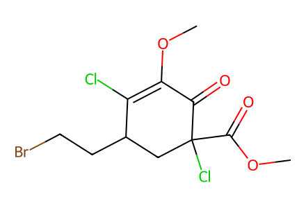
COC(=O)C1(Cl)CC(CCBr)C(Cl)=C(OC)C1=O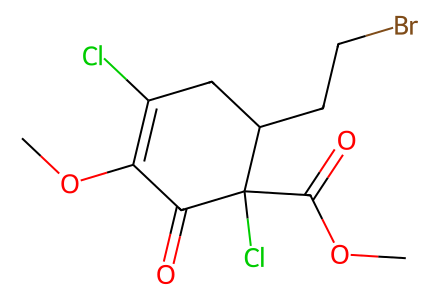
COC(=O)C1(Cl)C(=O)C(OC)=C(Cl)CC1CCBr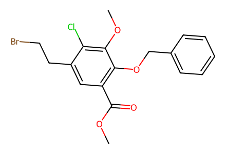
COC(=O)c1cc(CCBr)c(Cl)c(OC)c1OCc1ccccc1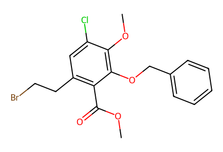
COC(=O)c1c(CCBr)cc(Cl)c(OC)c1OCc1ccccc1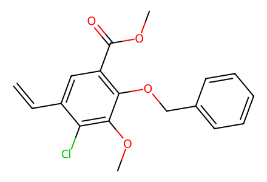
C=Cc1cc(C(=O)OC)c(OCc2ccccc2)c(OC)c1Cl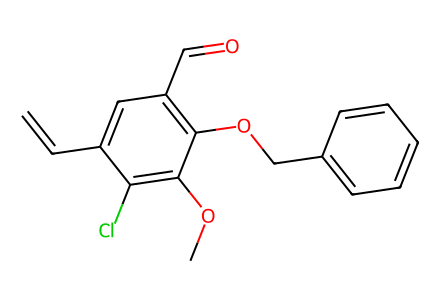
C=Cc1cc(C=O)c(OCc2ccccc2)c(OC)c1Cl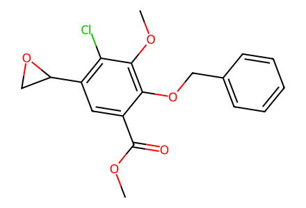
COC(=O)c1cc(C2CO2)c(Cl)c(OC)c1OCc1ccccc1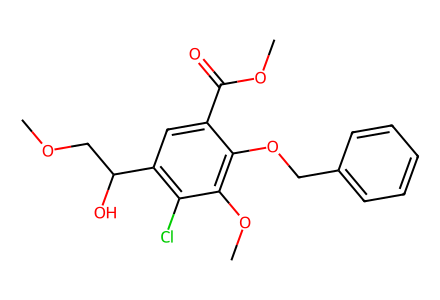
COCC(O)c1cc(C(=O)OC)c(OCc2ccccc2)c(OC)c1Cl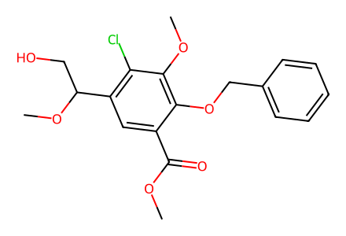
COC(=O)c1cc(C(CO)OC)c(Cl)c(OC)c1OCc1ccccc1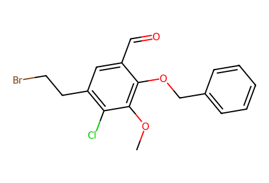
COc1c(Cl)c(CCBr)cc(C=O)c1OCc1ccccc1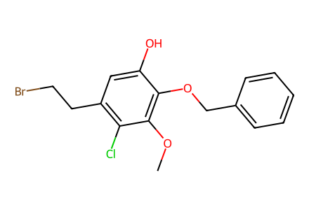
COc1c(Cl)c(CCBr)cc(O)c1OCc1ccccc1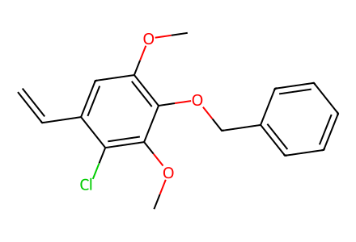
C=Cc1cc(OC)c(OCc2ccccc2)c(OC)c1Cl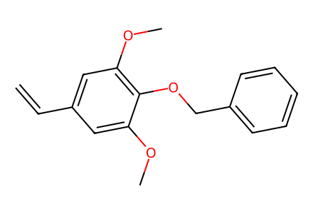
C=Cc1cc(OC)c(OCc2ccccc2)c(OC)c1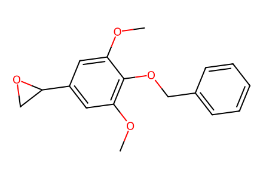
COc1cc(C2CO2)cc(OC)c1OCc1ccccc1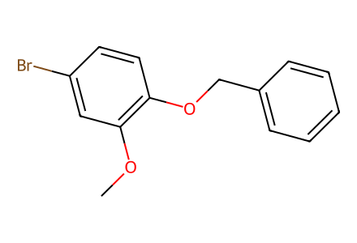
COc1cc(Br)ccc1OCc1ccccc1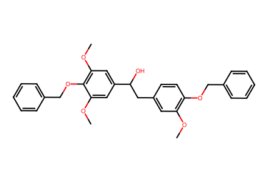
COc1cc(CC(O)c2cc(OC)c(OCc3ccccc3)c(OC)c2)ccc1OCc1ccccc1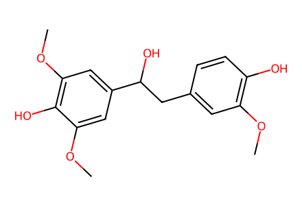
COc1cc(CC(O)c2cc(OC)c(O)c(OC)c2)ccc1O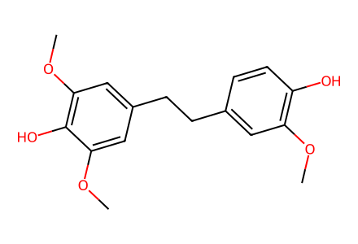
COc1cc(CCc2cc(OC)c(O)c(OC)c2)ccc1O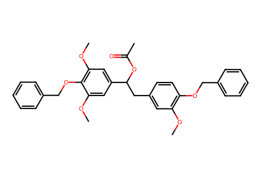
COc1cc(CC(OC(C)=O)c2cc(OC)c(OCc3ccccc3)c(OC)c2)ccc1OCc1ccccc1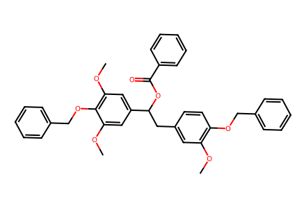
COc1cc(CC(OC(=O)c2ccccc2)c2cc(OC)c(OCc3ccccc3)c(OC)c2)ccc1OCc1ccccc1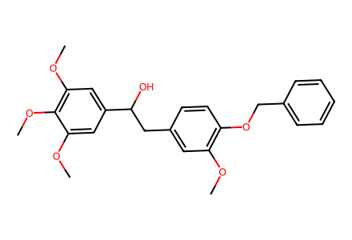
COc1cc(CC(O)c2cc(OC)c(OC)c(OC)c2)ccc1OCc1ccccc1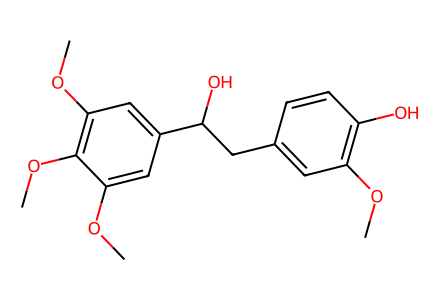
COc1cc(CC(O)c2cc(OC)c(OC)c(OC)c2)ccc1O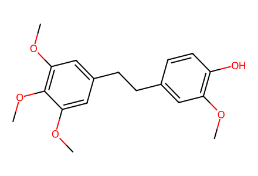
COc1cc(CCc2cc(OC)c(OC)c(OC)c2)ccc1O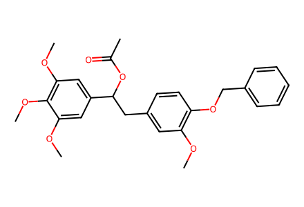
COc1cc(CC(OC(C)=O)c2cc(OC)c(OC)c(OC)c2)ccc1OCc1ccccc1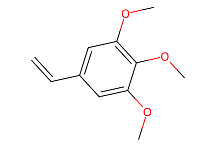
C=Cc1cc(OC)c(OC)c(OC)c1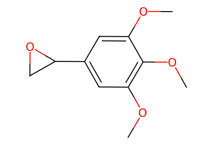
COc1cc(C2CO2)cc(OC)c1OC